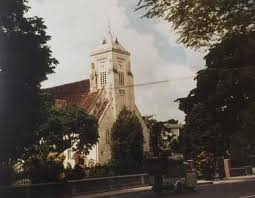
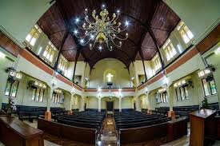

Ikon "Gereja Ayam"
Gereja Zebaoth berdiri sebagai saksi bisu kemegahan arsitektur kolonial. Dikenal secara lokal sebagai "Gereja Ayam", sebutan ini berasal dari ornamen penunjuk arah angin berbentuk ayam yang bertengger di puncak menaranya.
Terletak di perbatasan Kebun Raya Bogor, bangunan ini menawarkan visual yang kontras namun harmonis dengan pepohonan hijau di sekitarnya.

Fasad Depan ZebaothSentuh untuk Fakta Sejarah!
Ketahui kapan batu pertama bangunan ini diletakkan.
Bukan Sekadar Ibadah
Awalnya dikenal sebagai Koningin Wilhelmina Kerk, gereja ini dibangun pada tahun 1920 untuk melayani kebutuhan warga Eropa dan tamu-tamu elit dari Istana Bogor.
Arsitekturnya mencerminkan perpaduan antara gaya Eropa yang formal dengan adaptasi lingkungan tropis yang memungkinkan sirkulasi udara maksimal di dalam ruangan.

Detail Jendela & InteriorSimbol Toleransi
Hingga saat ini, Gereja Zebaoth bukan hanya menjadi tempat ibadah, tetapi juga simbol harmonisasi kehidupan beragama di Bogor, berdampingan dengan landmark religi lainnya seperti Vihara Dhanagun.